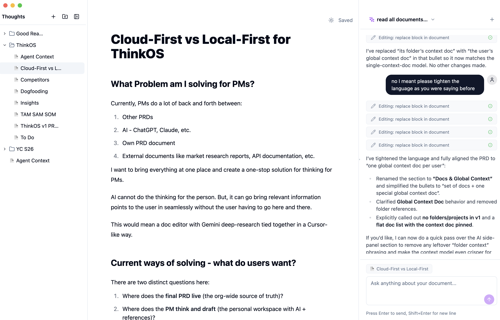
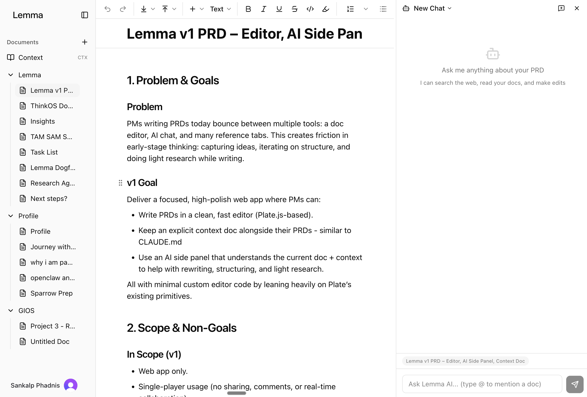

after pausing zarie, i took one lesson with me: treat a startup as a set of experiments. start cheap. increase effort only when each experiment succeeds.
the problem i saw
i started by watching how PMs actually write product documents. the patterns were surprisingly consistent. most people fell into one of two camps:
the first group lived in chatgpt. they'd go back and forth in a thread, rewriting context about their company, preferences, and product every single time they started a new document. the conversation thread was the workspace, and it was lossy. context died between sessions.
the second group was more technical. they used cursor or claude code, set up a directory of markdown files as their PRD library, and prompted the AI to write new .md files that referenced the existing ones. it worked, but an IDE is fundamentally not built for writing documents. the experience of drafting a PRD in a code editor and then exporting it for non‑technical stakeholders just felt wrong.
both groups had the same underlying problem: AI was genuinely useful for writing product documents, but the tools they were using weren't designed for it.
asking ai for the stack
i pitched my idea to an AI and asked it to give me SaaS companies and open‑source libraries that would make building this 10x easier and my go‑to‑market 100x faster.
it pointed me to Novel, an open‑source Notion‑style editor built on Tiptap. it suggested Clerk for auth, Plate.js as a richer editor alternative, and Convex for a real‑time backend. each of these was a lego block i could snap together instead of building from scratch. Novel gave me a full editor in a fork. Clerk gave me auth without writing a single line of auth code. Convex gave me a real‑time database with zero infra.
normally, integrating these libraries and services into a working product would itself take a long time. reading docs, figuring out the right configuration, wiring them together. but AI handled that too. i could point it at a repo or a docs page and it would plug things together in minutes. the combination of AI finding the right blocks and AI assembling them is what made the one‑day build possible.
v0: the one‑day electron app
with the stack in hand, i built the first version in a single day. i forked Novel's monorepo, added an Electron wrapper around it, and wired in an AI chat sidebar using OpenAI's GPT‑4o. the entire thing was vibe‑coded. i described what i wanted, the AI wrote the code, i iterated on it.

the AI wasn't just a chatbot bolted onto an editor. it had tools. it could read other documents in your library, search the web via Tavily, edit specific blocks in your document by ID, and even ask you clarifying questions through a structured UI. every document was a markdown file with annotated block IDs, so the AI could target precise sections without rewriting the whole thing.
a detour with claude agent sdk
since i was already using claude code for my own PRD writing (the "second group" i described above), i tried plugging in the claude agent sdk as the AI backend for v0. same harness that powers claude code, open source, and everything was local anyway, so it seemed like a simple swap.
it didn't work well. the agent sdk is an open, general‑purpose harness. it's not opinionated about what the AI should do with a document. my hand‑rolled integration with a specific system prompt, constrained tool set, and block‑level editing instructions gave noticeably better answers. and the sdk burned through tokens at a rate that made no sense for a product where users would be chatting with the AI dozens of times per session.
the lesson: a general‑purpose AI harness optimizes for flexibility. a product needs to optimize for the specific thing the user is trying to do. the constraints are the product.
i shared it with five people, flatmates and PM friends, as a raw .dmg over WhatsApp.
they used it more than i expected. people were actually writing PRDs in it, not just trying it once and forgetting. that was enough signal to invest more.
v1: shifting to web
the Electron app worked, but distribution was painful. every update meant building a new .dmg, sending it manually, and hoping people replaced the old one. macOS Gatekeeper warnings scared off non‑technical users. i spent more time on distribution than on the product itself.
so i rebuilt from scratch on the web. different editor, different backend, different everything.

i switched from Novel/Tiptap to Plate.js, a Slate‑based editor with a much richer plugin ecosystem. comments, suggestions, track changes, slash commands, tables, code blocks, mermaid diagrams, math equations. all built in. the editor went from a decent markdown editor to something that felt closer to Notion or Google Docs.
Convex replaced the local file system. documents lived in a real‑time database with subscriptions, so changes synced instantly. Clerk handled auth, which meant i could share a URL instead of a .dmg. the whole v1 was also vibe‑coded.
i didn't build everything at once. i started with the core editor and AI chat, deployed it, and then added features based on how people actually used the product. i was dogfooding it myself for my own PRDs, and watching what my friends did with it. wing it, for example, came much later, after i noticed people kept starting documents from scratch instead of iterating on existing ones.
the ai integration
the AI was wired into the editor, not bolted on as a sidebar. the system prompt was dynamically built from your workspace context: your active document (serialized as XML with inline comments), a global context document (company info, writing preferences), your directory tree, and related documents.
the AI had five tools: webSearch for real‑time research via Tavily, extractContent for pulling text from URLs, readPage for reading other workspace documents, editDocument for making targeted edits to specific blocks, and askQuestion for gathering structured input from the user. edits happened at the block level. each paragraph, heading, and list item had a unique ID, so the AI could replace, insert, or delete specific blocks without touching the rest of the document.
wing it
the feature i'm most proud of is "wing it." you give it a topic, it asks 6‑9 quick multiple‑choice questions to understand what you want, then it takes over: researches the ecosystem via web search, reads your existing context documents, and writes a full PRD. the whole thing runs as a 3‑step server‑sent events pipeline.
the research step is the slow one. i added a chrome dino game to the loading screen so people had something to do while waiting.

vibe coding
both versions were almost entirely vibe‑coded. i didn't write the Electron IPC bridge by hand, or manually configure 40 Plate.js plugins, or set up the Convex schema. i described what i wanted, the AI wrote the code, i tested it, we iterated.
that's the thing that made lemma possible as a solo builder. the Electron app took one day. the full web app took about a week. without vibe coding, each version would have taken weeks to months. the real unlock wasn't speed, it was that i could explore ideas that would have been too expensive to try otherwise. i could afford to throw away v0 and rebuild from scratch because building it cost almost nothing.
when building is that cheap, you can treat each version as disposable. the electron app wasn't a sunk cost. it was a cheap probe that told me the idea had legs. v1 was a new experiment informed by the first one.
why i paused
lemma got to 8 users and 42 documents. people used it and wing it genuinely saved time. but two things became clear.
first, differentiation. Notion, Coda, Google Docs were all shipping AI features fast. the moat i thought i had (deep AI integration into the editor) was shrinking by the week. what i built in days, they shipped to millions. competing on editor features against teams of hundreds was not a fight i could win.
second, i was burnt out. i'd gone from zarie to lemma without a real break. the energy runway was low. i was still shipping, but the quality of my decisions was degrading. i was over‑engineering features instead of talking to users, and spending more time questioning the path than enjoying the work.
so i paused. the code is on github if you want to look at the implementation.
what i took away
the one‑day Electron app told me more about demand than any amount of market research would have. asking AI for the stack saved days of googling. vibe coding let me build two complete products in the time it would have taken to build one feature the traditional way.
the experiment framework from zarie carried over well. v0 was a one‑day bet. it worked, so v1 got a week. v1 worked technically but the market signal was unclear and my energy was gone. so i paused instead of pushing. that felt right.